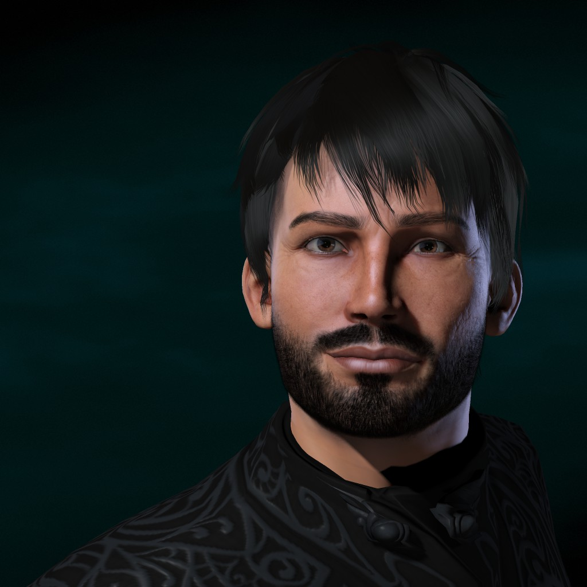
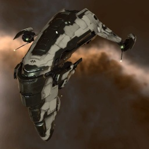
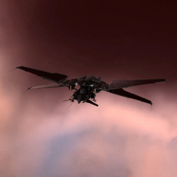

MINC Through The Years


Mercurialis Inc. is founded on October 28th during EVE Online's beta phase, making us one of the oldest corporations in New Eden. The game itself is still finding its footing, with only a few thousand players testing the mechanics that will define nullsec warfare for decades to come.
MINC joins its first alliance, Interstellar Alcohol Conglomerate (IAC), and establishes operations in Catch. The alliance consists of European and American players with a strong shared culture. Member corporations maintain their own identities while participating in alliance operations. At the time, MINC has roughly 20 active pilots.
IAC's neighbors in Querious provide constant combat opportunities. With enemy headquarters just one jump away, small gang roams are frequent. In one engagement, what started as a station provocation turned into both sides forming a conga line around the structure before the fight eventually kicked off.
MINC continues operations in IAC. Notable members during this period include CEO Isayo Arkindra, officers Mannakin and Thundirr, and an Irish pilot from Cork. The corp maintains a small but active presence in Catch's ongoing conflicts.
Several MINC members attend EVE Fanfest in Reykjavik, Iceland: Isayo Arkindra, Thundirr, Mannakin, and Rylok. This marks one of the first real-world gatherings of the corp. (Note: a video of the event is archived on YouTube under the title "IAC Fanfest 2007" but appears to be mislabeled.)
MINC builds its first station, MINC Delirium, in RNF-YH (Catch). AAA uses its larger numbers to force IAC out of the region. During the conflict high value ships were stolen from MINC, including two motherships and the MINC Ragnarok. MINC leaves Interstellar Alcohol Conglomerate and joins Wildly Inappropriate.

Source: DOTLAN EveMaps
MINC builds a second station, MINC Aberration, in C-4ZOS (Branch). The corp continues to establish infrastructure in nullsec despite the turbulent political landscape.

Source: DOTLAN EveMaps
Looney Toons conquers MINC Aberration. MINC leaves Wildly Inappropriate and joins RAZOR Alliance, beginning what will become a six-year partnership. Isayo Arkindra steps down as CEO, appointing xMillz.
MINC runs a Titans and Supercarriers class for EVE University, one of the game's premier teaching organizations. A recording survives to this day, documenting the corp's expertise in capital warfare during this era.
xMillz leaves the game and passes the CEO title to Nairb Ecrep but retains his corporation shares. During the RAZOR period, MINC conquers a station in P-E (Geminate), naming it De Ja Vu. The corp continues operations in the northern regions as part of RAZOR's holdings.
Battle of Asakai: On January 27, 2013, a Cluster Fuck Coalition fleet commander accidentally jumped his titan instead of bridging his fleet during a routine operation in Asakai. What should have been a minor skirmish escalated within minutes as both the CFC and HBC (HoneyBadger Coalition) committed supercapital fleets to save or kill the stranded titan. The battle drew over 3,000 players and lasted nearly six hours, with losses exceeding 700 billion ISK. It became one of the first massive supercapital brawls to capture mainstream gaming media attention.
MINC deployed supercarriers, battleships, and interdictors to the engagement.
 Dobriy
Dobriy wifi
wifi Nimkando Hapkido
Nimkando Hapkido Death Vixxen
Death Vixxen Rancide BunnyMenalya Zamayid
Rancide BunnyMenalya Zamayid ScabRunner
ScabRunner Flatliner 111
Flatliner 111 Morphius1280
Morphius1280 Treyah
TreyahBloodbath of B-R5RB: On January 27, 2014, exactly one year after Asakai, the sovereignty bill for B-R5RB in Immensea went unpaid due to a clerical error. The system became vulnerable, and N3/PL moved to reinforce it. The CFC and Russian coalitions responded in force. What followed was the largest and most destructive battle in gaming history at the time: over 7,500 players, 21 hours of continuous fighting, and 75 titans destroyed along with dozens of supercarriers. Total losses exceeded 11 trillion ISK, roughly $300,000 USD in real-world value. The battle made international news and cemented EVE's reputation for epic-scale warfare.
MINC deployed capitals, subcapitals, and tackle to the grind.
 Borakh Tieberius
Borakh Tieberius
DiasporeMantro x Arbalesttom
Arbalesttom Karl Masonmarly cortez
Karl Masonmarly cortez Adaram Kori'nhmercuryyy
Adaram Kori'nhmercuryyy
 Billa Clack
Billa Clack Psyentific
Psyentific PurpleshadezAgaetis Byrjun
PurpleshadezAgaetis Byrjun Ben McRock
Ben McRock Chaosstation
Chaosstation Bratan Juzik
Bratan Juzik AuldareCool9th
AuldareCool9th
Nairb Ecrep has disappeared and gone completely AFK. The directorship is planning to sunset the corp. A plan emerges to reclaim the shares held by xMillz and allow the directorship to assign a new CEO. When xMillz is contacted, he decides to ransom the shares. He takes advantage of still having ownership of the corporation holding the coffers, wealth accumulated from years of moon mining and asset building, including the corporation's entire collection of super capital ship production BPOs. Before agreeing to transfer the shares, he demands payment: the entire corp wallet and all super capital BPOs locked in his alt corporation.
Reluctantly, the directorship agrees to the terms. In January 2015, marly cortez takes over as CEO and immediately begins the recovery process. The timing proves fortunate. Marly's son Rich DK is a leader in RAZOR Alliance, giving MINC the support it needs to rebuild from near bankruptcy.
[NOTE: Need to ask primus why we left Razor]
As the decision is made to leave RAZOR, the directorship discusses options. Goonswarm Federation seems like a viable choice, but the consensus is that it represents an endgame move. The concern is that Goonswarm's stability and security, while appealing, might lead to complacency and a slow fade into irrelevance. The directorship chooses instead to join The Bastion, a newly formed member alliance of the Imperium.
Shortly after, Casino War erupts. A coalition of Imperium enemies, bankrolled by wealthy EVE gambling site operators, assembles the largest military mobilization the game has seen in years. The Moneybadgers Coalition drives the Imperium out of the north, system by system. MINC fights through the entire campaign, participating in the evacuation and the long retreat south to Delve.
The Imperium consolidates in Delve following the Casino War losses. MINC participates in the rebuilding effort as The Bastion establishes new infrastructure in the southern regions. The year is marked by reconstruction and preparation for future conflicts.
marly cortez steps down as CEO, appointing primus buck.
Battle of X47L-Q: On August 8, 2018, the Imperial Legacy coalition launches an assault on a Northern Coalition Keepstar in X47L-Q, Pure Blind. The engagement draws 6,270 pilots, surpassing the famous B-R5RB battle in player count, though not total ISK destroyed. Both sides commit unprecedented supercapital forces: over 540 titans and 510 supercarriers enter the grid, marking a historic escalation in supercapital warfare.
The battle rages for hours as both fleets trade fire in heavy time dilation. The attackers successfully destroy the Keepstar's armor layer, with total losses reaching approximately 10 trillion ISK. The engagement demonstrates that the supercapital arms race has reached new heights, with both coalitions now fielding titan fleets that dwarf the forces seen at B-R5RB four years earlier.
 Rox EvechanKarl Mason
Rox EvechanKarl Mason Mannakin
Mannakin Qicia
QiciaThe political landscape of nullsec shifts as TEST Alliance and PanFam begin consolidating opposition to the Imperium, quietly building the coalition that will become PAPI. The Imperium continues fortifying Delve, and MINC maintains industrial and combat operations as tensions across New Eden build toward open war. The calm is the last the corp will see for several years.
World War Bee 2 erupts across New Eden as the Imperium faces PAPI (PandaFam, Legacy Coalition, and others), a massive coalition assembled with one goal: destroy Goonswarm Federation.
Following the loss of their home system in Fountain, MINC leadership chooses not to simply absorb into large Imperium fleet blobs. Instead, they form a SIG (Special Interest Group), a volunteer specialist strike force, with the goal of making a disproportionate impact with limited numbers. Identifying TEST Alliance's home region of Esoteria as critically vulnerable, TEST having stripped its defenses to concentrate forces in Delve, MINC deploys to Stain, NPC space on Esoteria's border.
Establishing operations in Stain requires diplomacy as much as firepower. On arrival, MINC's jump freighters are immediately bubbled by Stain Rus, the Russian-speaking coalition that fiercely guards the region as their homeland. After negotiating access to a station and citadel, MINC sets up a forward base and begins cultivating what becomes an indispensable operational partnership with Stain Rus.
MINC's opening strategy is alarm fatigue. Small groups, sometimes just two or three pilots in bombers, reinforce TEST structures to below 95% shields, triggering automated alert pings to TEST members across the entire game regardless of where they are fighting. To sustain round-the-clock pressure without requiring a Fleet Commander on every operation, MINC implements a PAP link tracking system that credits pilots for unsupervised harassment sorties. At peak, pilots ping fifty or more structures per day, creating a relentless noise floor of alerts for TEST's membership.
As TEST grows desensitized to the pings, MINC escalates. They anchor an Astrahus in HT4K, establishing a deep forward operating base in Esoteria that dramatically reduces travel time and extends their reach across the region via Black Ops bridges. They begin fully destroying structures, including abandoned ones whose contents spill into space, generating ISK and a corrosive propaganda narrative. They then push further, reinforcing IHUBs and TCUs. Destroying IHUBs strips ratting anomalies from TEST's most lucrative systems and eliminates the jump gate infrastructure critical to TEST's logistics between regions.
The partnership with Stain Rus deepens into a genuine operational alliance. MINC performs the objective work, entosing nodes and setting timers, while Stain Rus brings large Tornado fleets to destroy the TEST response forces. To cement the relationship, MINC constructs thirty Dreadnoughts for Stain Rus, providing the capital firepower needed to engage at scale. The result is extraordinary force multiplication. Just eight to fifteen MINC pilots, many dual or triple boxing, routinely pull one-hundred-and-fifty-man TEST fleets away from the main front in Delve. The Imperium's Meta Show capitalizes on this, publicly questioning why TEST leadership is trapped defending their backfield instead of leading the war effort.
The campaign's single greatest military achievement is the destruction of the IHUB in DTEKF, a supercapital production system deep in Esoteria. The kill pauses the construction of at least two Titans mid-build. The ISK recovered funds the remainder of MINC's campaign and enables them to produce their own capitals in theater.
The Initiative briefly deploys jump clones to HT4K to assist with EU timezone timers, arriving with a fleet of two hundred and fifty-five pilots. TEST counters by resetting their IHUB and sovereignty timers to a window outside The Initiative's active hours, neutralizing the reinforcement. The Initiative subsequently rotates to Catch, where timezone coverage is more favorable, and does significant damage there.
MINC's forward base in HT4K eventually falls after TEST mounts repeated assault attempts. On the final timer, TEST bypasses MINC's defensive bubble perimeter by jumping through a public cyno beacon owned by Stain Rus in an adjacent system, its access list not having been updated in time. With minutes remaining on the timer, MINC cannot recover the position.
The loss of HT4K does not end MINC's presence in Esoteria. Additional Fortizars are anchored across the region, and as SOV upgrades accumulate, Ansiblex Jump Gates come online, providing rapid transit between key systems and cementing MINC's ability to sustain long-range operations far from home.
Throughout the campaign, MINC operates with a small, mobile strike force and methodically burns through TEST's undefended systems. They destroy the most expensive Sotiyo ever killed at the time and extract approximately 400 billion ISK worth of structures and assets from systems TEST assumed were secure. What begins as a SIG of roughly thirty pilots grows into a full alliance deployment, with MINC recognized as the longest forward-deployed Imperium group of the entire war.
Fury at FWST-8In October 2020, PAPI attempts to anchor a Keepstar in FWST-8 as part of their offensive into Imperium space. The Imperium successfully repels multiple anchoring attempts, destroying PAPI Keepstars before they can online. On October 5, 2020, PAPI deploys a controversial tactic: bubble wrapping the anchoring Keepstar by surrounding it with their own ships and warp disruption bubbles, preventing the Imperium from targeting it. This tactic, previously considered an exploit or against accepted rules of engagement, allows the Keepstar to complete its anchoring timer. The Imperium forms a massive fleet to contest it anyway. Over 8,800 pilots enter the system, shattering all previous records and earning a Guinness World Record for the largest PvP battle in gaming history. The server struggles under the load, entering 10% time dilation for most of the fight. The battle lasts over 14 hours with losses exceeding 23 trillion ISK.
MINC deploys subcapitals, carriers, and a dreadnought throughout the engagement.
 Belegvaethor
BelegvaethorNidhoggur / Sacrilege
 Pendu PadecainRVAMitchell
Pendu PadecainRVAMitchell Draco Beleren
Draco Beleren Mystic Siren
Mystic SirenThe night before the battle, a small MINC strike team spends five hours chasing TEST FC Billy across node after node in DTEX8, exhausting him through relentless pursuit. Billy's fatigue from the ordeal is later credited as a contributing factor to the decision-making that leads to PAPI's catastrophe the following day.
On December 30, 2020, PAPI attempts to destroy an Imperium Keepstar in M2-XFE. The Imperium baits PAPI into committing their entire titan fleet, then brings their own supercapital armada. A server error causes hundreds of PAPI titans to load into the system late, trapping them without support. The Imperium begins a methodical slaughter. Over the following month, PAPI mounts multiple extraction attempts to save their trapped supercapital fleet, each resulting in further losses. Across the entire M2-XFE campaign, the Imperium destroys 257 titans, making it the most destructive series of engagements in EVE history. Total losses exceed 13 trillion ISK. The defeat effectively breaks PAPI's offensive momentum and marks the beginning of the end for their invasion.
MINC deploys supercarriers and a titan across multiple battles during the M2-XFE campaign.
Mystic SirenRVAMitchellVixen NyssaKarl MasonDraco BelerenPAPI's invasion of Delve collapses following the M2 disaster. The coalition withdraws, and World War Bee 2 ends with the Imperium victorious but bloodied. MINC participates in the cleanup operations and the slow process of rebuilding infrastructure damaged during the year-long siege.
primus buck steps down as CEO, appointing Khronos Thellere.
MINC leaves The Bastion and joins Goonswarm Federation directly, finally making the move the directorship had contemplated back in 2016. After years of fighting alongside Goonswarm, the corp finds a home in the alliance it helped defend.
Operations continue in Delve as part of Goonswarm Federation. The Imperium focuses on infrastructure development and smaller-scale conflicts following the massive losses of World War Bee 2. MINC maintains its position as a reliable combat corp within the alliance.
Khronos Thellere steps down as CEO, appointing RVAMitchell. As operations expand, MINC anchors a Fortizar in ZTS named De Ja Vu, a quiet tribute to the station conquered in Geminate over a decade prior.
MINC makes a strategic move, relocating to be closer to Pandemic Horde's territory. The positioning proves prescient. Shortly after, Pandemic Horde suffers an internal collapse, imploding in dramatic fashion. The power vacuum left by one of nullsec's largest coalitions reshapes the political landscape of New Eden, creating opportunities and chaos in equal measure.
As a tribute to MINC's roots, the corporation anchors a faction Fortizar in RNF-YH (Catch), the same system where MINC Delirium once stood, naming it MINC Delirium in honor of the corp's first home.
[NOTE: Need more details about the move to RNF and subsequent relocation]
War erupts between the Imperium and Fraternity (FRT). MINC participates in a daring operation: the headshot of Fraternity's staging Keepstar. The attack succeeds, marking the first time in EVE history that a nullsec power bloc successfully destroys another bloc's primary staging citadel in a direct assault. The operation demonstrates a shift in nullsec warfare doctrine and cements MINC's reputation for participating in history-making engagements.
[NOTE: Need more details about the FRT keepstar headshot operation]